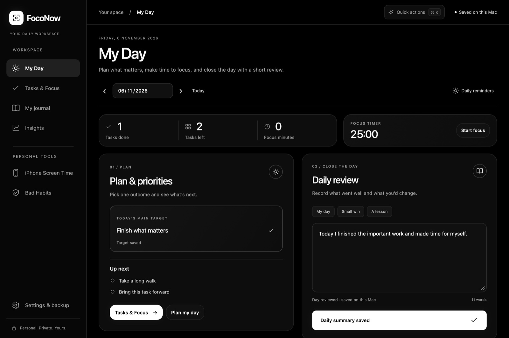

01 / Plan
Start with a target
Pick the outcome you want from today and put the tasks that support it in one list.
A daily workspace for Mac
Plan your day, settle into a focus session, and write a few lines before you close the lid. All in one place on your Mac.

The daily workflow
Pick the outcome you want from today and put the tasks that support it in one list.
Run a Pomodoro from the task list or menu bar. Hear an alert when a session or break ends and see your focus time in Insights.
End with a short daily review. Keep a journal of small wins, lessons, and what you want to do tomorrow.
Local by design
FocoNow works offline and saves your tasks, focus history, and journal on this Mac. You can export a backup to a location you choose. The welcome walkthrough explains optional access for alerts and iPhone Screen Time.
FocoNow · Mac preview
Version 1.15.2 · Apple silicon · macOS 13+
This preview is locally signed and has yet to be notarized by Apple. Follow Apple’s instructions for opening apps. Desktop widgets require macOS 14 or later.